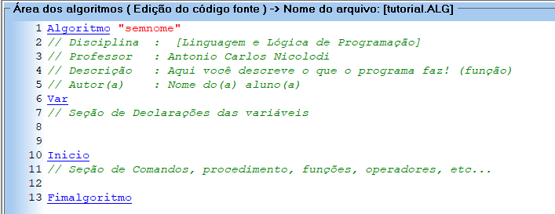

Os laços de repetição são estruturas fundamentais da lógica de programação, para executar repetidamente um conjunto de comandos de forma controlada.
Seu uso permite evitar a duplicação de código, tornando os algoritmos mais organizados, eficientes e fáceis de manter.
Em Portugol, essas estruturas são
amplamente empregadas em situações que envolvem contagem, leitura e processamento de dados,
realização de cálculos repetitivos e verificação contínua de condições.
De modo geral, os laços de repetição operam a partir de uma condição ou mecanismo de controle,
que determina a continuidade ou o encerramento da
execução do bloco de comandos.
A compreensão adequada dos laços de repetição é essencial para o desenvolvimento de algoritmos corretos e bem estruturados.
Nos tópicos seguintes,
serão apresentados os principais tipos de laços de repetição disponíveis em Portugol, bem como suas aplicações.